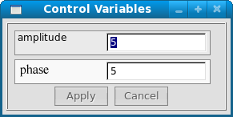

Kontrol Parametre Penceresi
Kontrol parametre penceresi ile benzetimde tanýmladýðýnýz kontrol deðiþkenlerinin deðerlerini deðiþtirebilirsiniz.

- Apply - Yapýlan deðiþiklikleri onaylama düðmesidir. Bu düðmeye basýlmadýðý takdirde yapýlan deðiþiklikler benzetime iletilmez.
- Cancel - Deðiþiklikler iptal olur, deðerler bir önceki halini alýr.